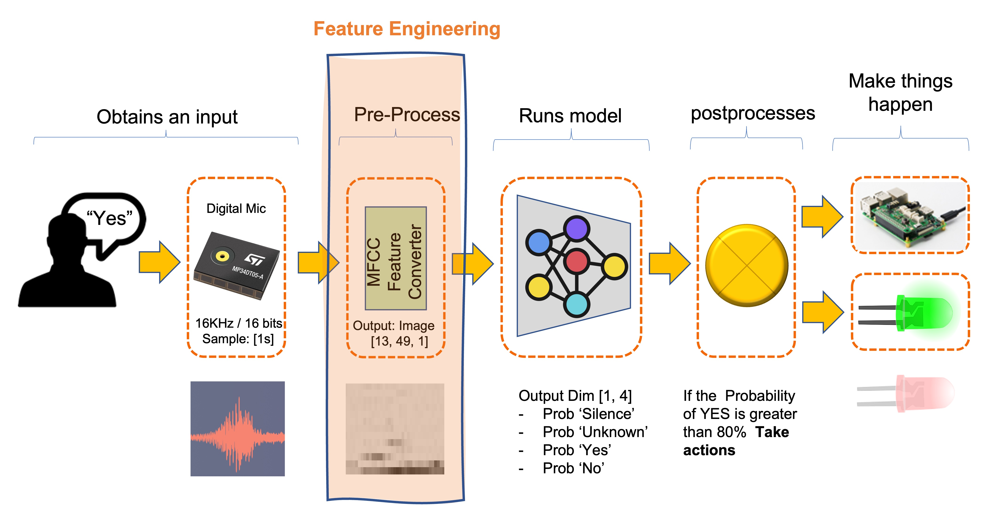

KWS Feature Engineering

Introduzione
In questo tutorial pratico, l’enfasi è posta sul ruolo critico che la “feature engineering” [ingegneria delle funzionalità] svolge nell’ottimizzazione delle prestazioni dei modelli di machine learning applicati alle attività di classificazione audio, come il riconoscimento vocale. È essenziale essere consapevoli che le prestazioni di qualsiasi modello di apprendimento automatico dipendono in larga misura dalla qualità delle feature utilizzate e ci occuperemo della meccanica “sotto il cofano” dell’estrazione delle feature, concentrandoci principalmente sui Mel-frequency Cepstral Coefficient (MFCC), una pietra miliare nel campo dell’elaborazione del segnale audio.
I modelli di apprendimento automatico, in particolare gli algoritmi tradizionali, non comprendono le onde audio. Comprendono i numeri disposti in modo significativo, ovvero le feature. Queste feature incapsulano le caratteristiche del segnale audio, rendendo più facile per i modelli distinguere tra suoni diversi.
Questo tutorial si occuperà della generazione di feature specificamente per la classificazione audio. Ciò può essere particolarmente interessante per l’applicazione di machine learning a una varietà di dati audio, sia per il riconoscimento vocale, la categorizzazione musicale, la classificazione degli insetti basata sui suoni del battito delle ali o altre attività di analisi del suono
Il KWS
L’applicazione TinyML più comune è Keyword Spotting (KWS), un sottoinsieme del campo più ampio del riconoscimento vocale. Mentre il riconoscimento vocale generale trascrive tutte le parole pronunciate in testo, il Keyword Spotting si concentra sul rilevamento di “parole chiave” o “wake word” specifiche in un flusso audio continuo. Il sistema è addestrato a riconoscere queste parole chiave come frasi o parole predefinite, come yes o no. In breve, KWS è una forma specializzata di riconoscimento vocale con il suo set di sfide e requisiti.
Ecco un tipico processo KWS che utilizza MFCC Feature Converter:

Applicazioni di KWS
- Assistenti Vocali: In dispositivi come Alexa di Amazon o Google Home, KWS viene utilizzato per rilevare la wake word (“Alexa” o “Hey Google”) per attivare il dispositivo.
- Comandi Attivati Tramite Voce: In contesti automobilistici o industriali, KWS può essere utilizzato per avviare comandi specifici come “Avvia motore” o “Spegni luci”.
- Sistemi di Sicurezza: I sistemi di sicurezza attivati tramite voce possono utilizzare KWS per autenticare gli utenti in base a una passphrase pronunciata.
- Servizi di Telecomunicazione: Le linee del servizio clienti possono utilizzare KWS per instradare le chiamate in base a parole chiave pronunciate.
Differenze dal Riconoscimento Vocale Generale
- Efficienza Computazionale: KWS è solitamente progettato per essere meno intensivo dal punto di vista computazionale rispetto al riconoscimento vocale completo, poiché deve riconoscere solo un piccolo set di frasi.
- Elaborazione in Tempo Reale: KWS spesso funziona in tempo reale ed è ottimizzato per il rilevamento a bassa latenza delle parole chiave.
- Vincoli di Risorse: I modelli KWS sono spesso progettati per essere leggeri, in modo da poter essere eseguiti su dispositivi con risorse computazionali limitate, come microcontrollori o telefoni cellulari.
- Attività Mirata: Mentre i modelli di riconoscimento vocale generali sono addestrati per gestire un’ampia gamma di vocabolario e accenti, i modelli KWS sono ottimizzati per riconoscere parole chiave specifiche, spesso in modo accurato in ambienti rumorosi.
Introduzione ai Segnali Audio
Comprendere le proprietà di base dei segnali audio è fondamentale per un’estrazione efficace delle feature [caratteristiche] e, in ultima analisi, per applicare con successo gli algoritmi di apprendimento automatico nelle attività di classificazione audio. I segnali audio sono forme d’onda complesse che catturano le fluttuazioni della pressione dell’aria nel tempo. Questi segnali possono essere caratterizzati da diversi attributi fondamentali: frequenza di campionamento, frequenza e ampiezza.
Frequenza e Ampiezza: La Frequenza si riferisce al numero di oscillazioni che una forma d’onda subisce per unità di tempo e si misura anche in Hz. Nel contesto dei segnali audio, frequenze diverse corrispondono a pitch [toni] diversi. L’Ampiezza, d’altra parte, misura la grandezza delle oscillazioni e si correla con l’intensità del suono. Sia la frequenza che l’ampiezza sono feature essenziali che catturano le qualità tonali e ritmiche dei segnali audio.
Frequenza di Campionamento: La frequenza di campionamento, spesso indicata in Hertz (Hz), definisce il numero di campioni presi al secondo durante la digitalizzazione di un segnale analogico. Una frequenza di campionamento più elevata consente una rappresentazione digitale più accurata del segnale, ma richiede anche più risorse di elaborazione. Le frequenze di campionamento tipiche includono 44,1 kHz per l’audio di qualità CD e 16 kHz o 8 kHz per le attività di riconoscimento vocale. Comprendere i compromessi nella selezione di una frequenza di campionamento appropriata è essenziale per bilanciare accuratezza ed efficienza computazionale. In generale, con i progetti TinyML, lavoriamo con 16 KHz. Sebbene i toni musicali possano essere uditi a frequenze fino a 20 kHz, la voce raggiunge il massimo a 8 kHz. I sistemi telefonici tradizionali utilizzano una frequenza di campionamento di 8 kHz.
Per una rappresentazione accurata del segnale, la frequenza di campionamento deve essere almeno il doppio della frequenza più alta presente nel segnale.
- Dominio del Tempo e Dominio della Frequenza: I segnali audio possono essere analizzati nei domini del tempo e della frequenza. Nel dominio del tempo, un segnale è rappresentato come una forma d’onda in cui l’ampiezza è tracciata in funzione del tempo. Questa rappresentazione aiuta a osservare feature temporali come inizio e durata, ma le caratteristiche tonali del segnale non sono ben evidenziate. Al contrario, una rappresentazione del dominio della frequenza fornisce una vista delle frequenze costituenti del segnale e delle rispettive ampiezze, in genere ottenute tramite una trasformata di Fourier. Questo è prezioso per le attività che richiedono la comprensione del contenuto spettrale del segnale, come l’identificazione di note musicali o fonemi vocali (il nostro caso).
L’immagine seguente mostra le parole YES e NO con rappresentazioni tipiche nei domini del tempo (audio grezzo) e della frequenza:

Perché l’Audio Grezzo No?
Sebbene l’utilizzo diretto di dati audio grezzi per attività di apprendimento automatico possa sembrare allettante, questo approccio presenta diverse sfide che lo rendono meno adatto alla creazione di modelli solidi ed efficienti.
L’utilizzo di dati audio grezzi per il Keyword Spotting (KWS), ad esempio, su dispositivi TinyML pone delle sfide dovute alla sua elevata dimensionalità (utilizzando una frequenza di campionamento di 16 kHz), alla complessità computazionale per l’acquisizione di feature temporali, alla suscettibilità al rumore e alla mancanza di feature semanticamente significative, rendendo le tecniche di estrazione di caratteristiche come MFCC una scelta più pratica per applicazioni con risorse limitate.
Ecco alcuni dettagli aggiuntivi sui problemi critici associati all’utilizzo di audio grezzi:
Alta Dimensionalità: I segnali audio, in particolare quelli campionati ad alte velocità, generano grandi quantità di dati. Ad esempio, una clip audio di 1 secondo campionata a 16 kHz avrà 16.000 punti singoli. I dati ad alta dimensionalità aumentano la complessità computazionale, portando a tempi di training più lunghi e costi computazionali più elevati, rendendoli poco pratici per ambienti con risorse limitate. Inoltre, l’ampia gamma dinamica dei segnali audio richiede una quantità significativa di bit per campione, mentre trasmette poche informazioni utili.
Dipendenze Temporali: I segnali audio grezzi hanno strutture temporali che i semplici modelli di apprendimento automatico potrebbero trovare difficili da catturare. Sebbene le reti neurali ricorrenti come LSTM possano modellare tali dipendenze, sono computazionalmente intensive e difficili da addestrare su dispositivi di piccole dimensioni.
Rumore e Variabilità: I segnali audio grezzi spesso contengono rumore di fondo e altri elementi non essenziali che influenzano le prestazioni del modello. Inoltre, lo stesso suono può avere caratteristiche diverse in base a vari fattori come la distanza dal microfono, l’orientamento della sorgente sonora e le proprietà acustiche dell’ambiente, aggiungendo complessità ai dati.
Mancanza di Significato Semantico: L’audio grezzo non contiene intrinsecamente feature semanticamente significative per le attività di classificazione. Feature come tono, tempo e feature spettrali, che possono essere cruciali per il riconoscimento vocale, non sono direttamente accessibili dai dati della forma d’onda grezza.
Ridondanza del Segnale: I segnali audio spesso contengono informazioni ridondanti, con alcune porzioni del segnale che contribuiscono poco o per niente al compito da svolgere. Questa ridondanza può rendere l’apprendimento inefficiente e potenzialmente portare a un overfitting.
Per queste ragioni, tecniche di estrazione di feature come i Mel-frequency Cepstral Coefficients (MFCCs), le Mel-Frequency Energies (MFEs) e gli spettrogrammi semplici sono comunemente utilizzate per trasformare i dati audio grezzi in un formato più gestibile e informativo. Queste feature catturano le caratteristiche essenziali del segnale audio riducendo dimensionalità e rumore, facilitando un apprendimento automatico più efficace.
Introduzione agli MFCC
Cosa sono gli MFCC?
I Mel-frequency Cepstral Coefficients (MFCC) sono un set di feature derivate dal contenuto spettrale di un segnale audio. Si basano sulle percezioni uditive umane e sono comunemente utilizzati per catturare le feature fonetiche di un segnale audio. Gli MFCC vengono calcolati tramite un processo in più fasi che include pre-enfasi, inquadratura, windowing, applicazione della Fast Fourier Transform (FFT) per convertire il segnale nel dominio della frequenza e, infine, applicazione della Discrete Cosine Transform (DCT). Il risultato è una rappresentazione compatta delle caratteristiche spettrali del segnale audio originale.
L’immagine seguente mostra le parole YES e NO nella loro rappresentazione MFCC:

Questo video spiega i Mel Frequency Cepstral Coefficients (MFCC) e come calcolarli.
Perché gli MFCC sono importanti?
Gli MFCC sono fondamentali per diversi motivi, in particolare nel contesto di Keyword Spotting (KWS) e TinyML:
- Riduzione della Dimensionalità: Gli MFCC catturano le caratteristiche spettrali essenziali del segnale audio riducendo significativamente la dimensionalità dei dati, rendendoli ideali per applicazioni TinyML con risorse limitate.
- Robustezza: Gli MFCC sono meno sensibili al rumore e alle variazioni di tono e ampiezza, offrendo un set di funzionalità più stabile e robusto per le attività di classificazione audio.
- Modellazione del Sistema Uditivo Umano: La scala Mel negli MFCC approssima la risposta dell’orecchio umano a diverse frequenze, rendendoli pratici per il riconoscimento vocale in cui è desiderata una percezione simile a quella umana.
- Efficienza Computazionale: Il processo di calcolo degli MFCC è efficiente dal punto di vista computazionale, rendendolo adatto per applicazioni in tempo reale su hardware con risorse computazionali limitate.
In sintesi, gli MFCC offrono un equilibrio tra ricchezza di informazioni ed efficienza computazionale, rendendoli popolari per le attività di classificazione audio, in particolare in ambienti limitati come TinyML.
Calcolo degli MFCC
Il calcolo dei Mel-frequency Cepstral Coefficients (MFCCs) comporta diversi passaggi chiave. Esaminiamoli, che sono particolarmente importanti per le attività di Keyword Spotting (KWS) sui dispositivi TinyML.
Pre-enfasi: Il primo passaggio è la pre-enfasi, che viene applicata per accentuare le componenti ad alta frequenza del segnale audio e bilanciare lo spettro di frequenza. Ciò si ottiene applicando un filtro che amplifica la differenza tra campioni consecutivi. La formula per la pre-enfasi è: y(t) = x(t) - \(\alpha\) x(t-1), dove \(\alpha\) è il fattore di pre-enfasi, in genere intorno a 0.97.
Framing: I segnali audio sono divisi in frame brevi (la frame length), in genere da 20 a 40 millisecondi. Ciò si basa sul presupposto che le frequenze in un segnale siano stazionarie per un breve periodo. Il framing aiuta ad analizzare il segnale in slot di tempo così piccoli. Il frame stride (o step) sposterà un frame e quello adiacente. Questi step potrebbero essere sequenziali o sovrapposti.
Windowing: Ogni frame viene quindi sottoposto a windowing per ridurre al minimo le discontinuità ai confini del frame. Una funzione window comunemente utilizzata è la finestra di Hamming. Il windowing prepara il segnale per una trasformata di Fourier riducendo al minimo gli effetti alle estremità. L’immagine sottostante mostra tre frame (10, 20 e 30) e i campioni di tempo dopo il windowing (notare che la lunghezza del frame e il frame stride sono di 20 ms):

- Fast Fourier Transform (FFT) La Fast Fourier Transform (FFT) viene applicata a ciascun frame sottoposto a windowing per convertirlo dal dominio del tempo al dominio della frequenza. La FFT ci fornisce una rappresentazione a valori complessi che include sia informazioni di ampiezza che di fase. Tuttavia, per gli MFCC, solo l’ampiezza viene utilizzata per calcolare lo spettro di potenza. Lo spettro di potenza è il quadrato dello spettro di ampiezza e misura l’energia presente in ogni componente di frequenza.
Lo spettro di potenza \(P(f)\) di un segnale \(x(t)\) è definito come \(P(f) = |X(f)|^2\), dove \(X(f)\) è la trasformata di Fourier di \(x(t)\). Elevando al quadrato l’ampiezza della trasformata di Fourier, mettiamo in risalto le frequenze più forti rispetto a quelle più deboli, catturando così caratteristiche spettrali più rilevanti del segnale audio. Ciò è importante in applicazioni come la classificazione audio, il riconoscimento vocale e il Keyword Spotting (KWS), in cui l’attenzione è rivolta all’identificazione di distinti pattern di frequenza che caratterizzano diverse classi di audio o fonemi nel parlato.

- Mel Filter Banks: Il dominio di frequenza viene poi mappato sulla scala Mel, che approssima la risposta dell’orecchio umano a diverse frequenze. L’idea è di estrarre più feature (più filtri) nelle frequenze più basse e meno in quelle alte. Pertanto, funziona bene sui suoni distinti dall’orecchio umano. In genere, da 20 a 40 filtri triangolari estraggono le energie di frequenza Mel. Queste energie vengono poi trasformate in logaritmo per convertire i fattori moltiplicativi in quelli additivi, rendendoli più adatti per un’ulteriore elaborazione.

- Discrete Cosine Transform (DCT): L’ultimo passaggio consiste nell’applicare la Trasformata discreta del coseno (DCT) alle energie del log Mel. La DCT aiuta a de-correlare le energie, comprimendo efficacemente i dati e mantenendo solo le feature più discriminanti. Di solito, vengono mantenuti i primi 12-13 coefficienti DCT, formando il vettore finale delle feature MFCC.

Pratica con Python
Applichiamo quanto discusso lavorando su un campione audio reale. Aprire il notebook su Google CoLab ed estrarre le funzionalità MLCC sui campioni audio: [Open In Colab]
Conclusione
Quale Tecnica di Estrazione delle Feature dovremmo usare?
I Mel-frequency Cepstral Coefficient (MFCC), le Mel-Frequency Energie (MFE), o lo Spettrogramma sono tecniche per rappresentare dati audio, che sono spesso utili in diversi contesti.
In generale, gli MFCC sono più focalizzati sulla cattura dell’inviluppo dello spettro di potenza, il che li rende meno sensibili ai dettagli spettrali a grana fine ma più robusti al rumore. Questo è spesso auspicabile per le attività relative al parlato. D’altro canto, gli spettrogrammi o MFE conservano informazioni di frequenza più dettagliate, il che può essere vantaggioso in attività che richiedono discriminazione basata su contenuti spettrali a grana fine.
Gli MFCC sono particolarmente efficaci per:
- Riconoscimento Vocale: Gli MFCC sono eccellenti per identificare il contenuto fonetico nei segnali vocali.
- Identificazione del Parlante: Possono essere utilizzati per distinguere tra diversi parlanti in base alle caratteristiche della voce.
- Riconoscimento delle Emozioni: Gli MFCC possono catturare le sfumature nel parlato indicative di stati emotivi.
- Keyword Spotting: Specialmente in TinyML, dove la bassa complessità computazionale e le piccole dimensioni delle funzionalità sono cruciali.
Gli spettrogrammi o MFE sono spesso più adatti per:
- Analisi Musicale: Gli spettrogrammi possono catturare strutture armoniche e timbriche nella musica, il che è essenziale per attività come la classificazione del genere, il riconoscimento degli strumenti o la trascrizione musicale.
- Classificazione dei Suoni Ambientali: Nel riconoscimento di suoni ambientali non vocali (ad esempio pioggia, vento, traffico), lo spettrogramma completo può fornire feature più discriminanti.
- Identificazione del Canto degli Uccelli: I dettagli intricati dei richiami degli uccelli sono spesso meglio catturati utilizzando gli spettrogrammi.
- Elaborazione del Segnale Bioacustico: In applicazioni come l’analisi dei richiami dei delfini o dei pipistrelli, le informazioni di frequenza a grana fine in uno spettrogramma possono essere essenziali.
- Audio Quality Assurance: Gli spettrogrammi sono spesso utilizzati nell’analisi audio professionale per identificare rumori indesiderati, clic o altri artefatti.